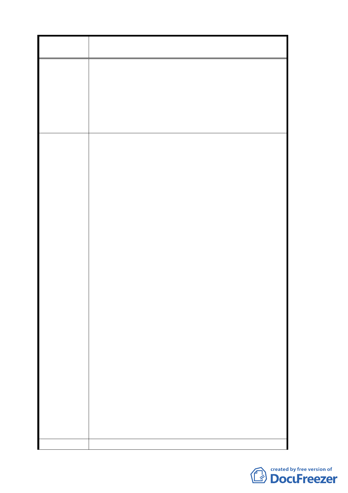

案 名 變更臺北市文山區指南里、老泉里部分保護區為休閒
產業特定專用區都市計畫案
主，當地住民多具有農民之身分，建議本案應考
量兼顧地方特色，農業發展及農民之權益。
二、 變更為休閒產業專用區後，經營者必須改善目前
相關建物之外觀、設施以符合法律規範，其改善
之內容、規模應確實告知。
三、關於二年期間之改善緩衝期是否適當。
四、區內坡度三○度以上不可建築之農地，應予免稅。
1. 本計畫若經通過實施後，除因經營休閒產業使用之
土地或建物需依法變更用途外，其他未變更用途之
農舍或農地應可繼續維持農業使用，以保有地方產
業特色與農業風貌。
2. 有關單位應將做休閒產業之土地或建物與農業用
途之土地或建物予以分離，並同意依實際經營情形
同意加以分割、分別計算相關稅賦，以兼顧地方特
色、農業發展及農民之權益。
3. 應比照保護區變更為住宅區時，農地處分如仍繼續
做農業使用時，則可免稅。
4. 改善之內容、標準除採目前公告之形式外，更應以
其他更具體、積極之方式充分告知民眾，方便民眾
表示意見。〈如增加公告處所、分發說明書件、基
層行政系統宣達方式〉
建 議 辦 法 5. 對於進行相關工程所需之經費，請事先提供必須改
善之內容、項目〈如建物外觀、污水、廢棄物處理
設備、水土保持工程、交通停車設施等〉即期經費
需求估算，以利經營者評估改善之經濟效益。
6. 改善規範與經營者之期待若產生過大之落差，將影
響日後本特定專用區推動時之成功與否及經營者
之意願。
7. 特定專用區內建物屋頂使用之建材，增加「瓦形鍍
鋅鋼板」。
8. 可否考量酌予延長？
9. 並建議市府有關單位編列預算，以不同階段、不同
標準之方式獎勵經營者儘速推動相關改善之工
作，使本區提前展現新風貌，嘉惠廣大從事遊憩活
動之民眾。
10.區內坡度三○度以上不可建築之農地，應予免稅。
專 案小組 審 1. 依本案開發許可規範（六）申請規定：「既有合法建
四